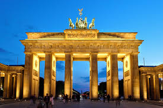

About Berlin
Bavaria is Germany’s largest state, renowned for its dramatic Alpine landscapes and a deeply rooted cultural identity. Its capital, Munich, serves as a hub where high-tech industry meets traditional charm, most notably during the world-famous Oktoberfest. The region’s geography is dominated by the Bavarian Alps, providing a scenic backdrop for the Zugspitze, the country's highest peak.
The state is iconic for its preservation of tradition, from Lederhosen to the local philosophy of Gemütlichkeit—a sense of coziness and hospitality. Beyond its customs, Bavaria is home to world-renowned landmarks like the fairytale Neuschwanstein Castle and the medieval architecture of the Romantic Road.

Top Attractions

The Brandenburg Gate
Berlin's most iconic landmark and a symbol of German unity. Once a part of the border between East and West, this neoclassical arch now stands as the gateway to the city’s historic center.

Museum Island
A UNESCO site on the Spree hosting five world-class museums, covering 6,000 years of art and history. This cultural hub features iconic treasures like the bust of Nefertiti and the Pergamon Altar.

The East Side Gallery
This 1.3 km open-air gallery is the longest original stretch of the Berlin Wall, featuring over 100 murals that symbolize freedom and reconciliation.
Things to Do in Berlin
- Visit the Brandenburg Gate to see Berlin’s most iconic symbol of unity.
- Walk the East Side Gallery to view the historic murals painted on the longest remaining section of the Berlin Wall.
- Explore Museum Island to discover thousands of years of art and human history across five world-class museums.
- Climb the Berlin Cathedral to enjoy panoramic views of the city from the top of its historic dome.
- Shop and sightsee at Alexanderplatz to experience the heart of the city's modern commercial and transit life.
- Tour the Berlin Zoological Garden to see one of the most diverse animal collections in the world.